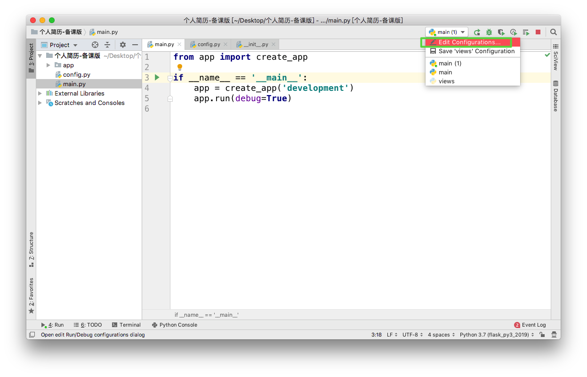

相关配置参数
1. flask对象配置方式
在 Flask 程序运行的时候，可以给 Flask 设置相关配置，比如：配置 Debug模式，配置数据库连接地址等等，设置 Flask 配置有以下三种方式：
从配置对象中加载(常用)
app.config.from_object()从配置文件中加载
app.config.from_pyfile()从环境变量中加载(了解)
app.config.from_envvar()
1.1 从配置对象中加载(常用)
从配置对象中加载，创建配置的类，代码如下：
# 配置对象，里面定义需要给 APP 添加的一系列配置
class Config(object):
DEBUG = True
# 创建 Flask 类的对象,指向程序所在的包的名称
app = Flask(__name__)
# 从配置对象中加载配置
app.config.from_object(Config)
1.2 配置文件(了解)
创建配置文件 config.ini，在配置文件中添加配置

使用代码去加载配置
# 创建 Flask 类的对象,指向程序所在的包的名称
app = Flask(__name__)
# 从配置文件中加载配置
app.config.from_pyfile('config.ini')
1.3 环境变量(了解)
编辑运行的相关配置


使用代码去加载配置
# 创建 Flask 类的对象,指向程序所在的包的名称
app = Flask(__name__)
# 加载指定环境变量名称所对应的相关配置
app.config.from_envvar('FLASKCONFIG')
2. 读取配置
app.config.get()- 在视图函数中使用
current_app.config.get()
注：Flask 应用程序将一些常用的配置设置成了应用程序对象的属性，也可以通过属性直接设置/获取某些配置：app.debug = True
3. 基本配置
config 实际上是字典的一个子类且能够像字典一样被修改:
app = Flask(__name__)
app.config['DEBUG'] = True
某些配置也被传入到 Flask 对象因此你可以在那里读取它们:
app.debug = True
你能够用 dict.update() 方法一次性地更新多个键值:
app.config.update(
DEBUG=True,
SECRET_KEY='...'
)
4. 其它配置值
下列配置值是 Flask 内部使用的：
| 配置名字 | 说明 |
|---|---|
DEBUG |
启用/禁止调试模式 |
TESTING |
启用/禁止测试模式 |
PROPAGATE_EXCEPTIONS |
显式地启用或者禁止异常的传播。 如果没有设置 或显式地设置为 None ， 当 TESTING 或 DEBUG 为真时， 隐式为真 |
PRESERVE_CONTEXT_ON_EXCEPTION |
默认情况下，如果应用工作在调试模式， 请求上下文不会在异常时出栈来允许调试器内省。 这可以通过这个键来禁用。 你同样可以用这个设定来强制启用它， 即使没有调试执行，这对调试生产应用很有用 (但风险也很大) |
SECRET_KEY |
密钥 |
SESSION_COOKIE_NAME |
会话 cookie 的名称 |
SESSION_COOKIE_DOMAIN |
会话 cookie 的域。如果没有设置的话， cookie 将会对 SERVER_NAME 所有的子域都有效 |
SESSION_COOKIE_PATH |
会话 cookie 的路径。如果没有设置或者没有为 '/' 设置，cookie 将会对所有的 APPLICATION_ROOT 有效 |
SESSION_COOKIE_HTTPONLY |
控制 cookie 是否应被设置 httponly 的标志， 默认为 True |
SESSION_COOKIE_SECURE |
控制 cookie 是否应被设置安全标志，默认为 False |
PERMANENT_SESSION_LIFETIME |
一个持久化的会话的生存时间，作为一个datetime.timedelta 对象。从 Flask0.8 开始 也可以用一个整数来表示秒 |
USE_X_SENDFILE |
启用/禁止 x-sendfile |
LOGGER_NAME |
日志记录器的名称 |
SERVER_NAME |
服务器的名称以及端口，需要它为了支持子域名 (如: 'myapp.dev:5000')。注意 localhost 是 不支持子域名的因此设置成 “localhost” 是无意义的。 设置 SERVER_NAME 默认会允许在没有请求上下文 而仅有应用上下文时生成 URL。 |
APPLICATION_ROOT |
如果应用不占用完整的域名或子域名， 这个选项可以被设置为应用所在的路径。 这个路径也会用于会话 cookie 的路径值。 如果直接使用域名，则留作 None。 |
MAX_CONTENT_LENGTH |
如果设置为字节数， Flask 会拒绝内容长度大于 此值的请求进入，并返回一个 413 状态码。 |
SEND_FILE_MAX_AGE_DEFAULT: |
默认缓存控制的最大期限，以秒计， 在 send_static_file() (默认的静态文件处理器)和 send_file() 中使用。 对于单个文件，覆盖这个值，使用get_send_file_max_age() 勾住Flask 或者 Blueprint。 默认为 43200（12小时） |
TRAP_HTTP_EXCEPTIONS |
如果这个值被设置为 True ， Flask 不会执行 HTTP 异常的错误处理， 而是像对待其它异常一样，通过异常栈让它冒泡。 这对于需要找出 HTTP 异常源头的可怕调试情形是有用的 |
TRAP_BAD_REQUEST_ERRORS |
Werkzeug 处理请求中的特定数据的内部数据结构会 抛出同样也是“错误的请求”异常的特殊的 key errors 。 同样地，为了保持一致，许多操作可以 显式地抛出 BadRequest 异常。因为在调试中， 你希望准确地找出异常的原因， 这个设置用于在这些情形下调试。 如果这个值被设置为 True ， 你只会得到常规的回溯 |
PREFERRED_URL_SCHEME |
URL 模式用于 URL 生成。如果没有设置 URL 模式， 默认将为 http |
JSON_AS_ASCII |
默认情况下 Flask 序列化对象成 ascii 编码的 JSON。 如果不对该配置项就行设置的话，Flask 将不会编码成 ASCII 保持字符串原样，并且返回 unicode 字符串。jsonfiy 会自动按照 utf-8 进行编码并且传输 |
JSON_SORT_KEYS |
默认情况下 Flask 将会依键值顺序的方式序列化 JSON。 这样做是为了确保字典哈希种子的独立性，返回值将会一致不会造成 额外的 HTTP 缓存。通过改变这个变量可以重载默认行为。 这是不推荐也许会带来缓存消耗的性能问题 |
JSONIFY_PRETTYPRINT_REGULAR |
如果设置成 True (默认下)，jsonify 响应将会完美地打印 |